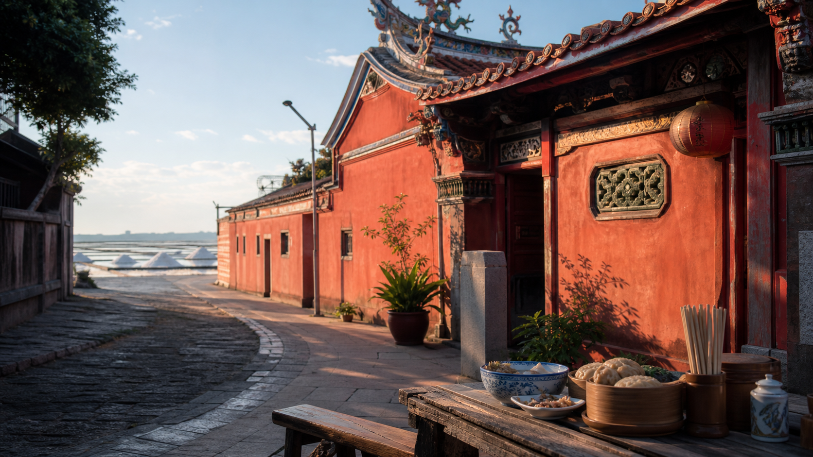

A
推薦預設
市區穩健版
吃飯、延平郡王祠、孔廟商圈、咖啡甜點，晚上看要海鮮還是打茶趣。
- 接受度最高
- 交通彈性最高
- 雨天也比較好改

2026-06-20 Sat. / 端午連假中間
先選擇 A/B/C 方案。預設市區穩健版，七股海線當想認真跑點的備案。
首選方向
讓大家快速決定「市區、海線、高鐵周邊」哪個方向。選完方向後，再從吃喝池和景點池挑主餐與備案。
選一個方向
吃飯、延平郡王祠、孔廟商圈、咖啡甜點，晚上看要海鮮還是打茶趣。
七股鹽山、海產街、鹽田或海線風景，適合有人想真的跑景點。
高鐵台南站、三井、奇美或十鼓、打茶趣，少移動，回程最乾淨。
目前顯示：全部時程草案。可以先看完三版，再點 A/B/C 收斂方向。
行程草案
最適合當預設，吃喝和景點都能臨場調整。
關鍵：先訂晚餐。如果午餐已經吃生魚片，晚餐可改台菜、小吃或打茶趣，避免餐飲類型重複。
適合想跑景點，但交通和天氣條件要先確認。
關鍵：這版需要車或包車。若當天太熱或下雨，建議直接切回 A 或 C。
最省心，不追求市區感，主打集合容易和回程簡單。
關鍵：這版很舒服，但台南市區味比較少。適合大家只想見面坐著聊。
餐飲選項
烤奶、圍爐煮茶，靠近高鐵台南站。適合 C 版主軸，也能當 A/B 版最後收尾。
參考生魚片與海鮮適合放午餐或晚餐。午餐偏魚湯，晚餐偏熱炒更自然。
府前路魚湯、生魚片方向，離延平郡王祠近，適合 A 版午餐。
參考中西區金華路，海鮮、熱炒、生魚片。適合 A 版晚餐候選。
參考如果走 B 版，可在七股 176 縣道沿線找海鮮、虱目魚、文蛤、鮮蚵。
參考七股方向的魚粥、鮮蚵、海產備案，不一定要全塞進行程，先當餐廳池。
集合容易、選擇多，適合 C 版午餐或有人晚到時補位。
參考A 版下午很適合用這區當休息點，留一段咖啡、甜點或飲料時間。
景點選項
市區低負擔景點，可看御守，也能和孔廟商圈、府中街串成下午動線。
參考6/20 落在官方「鹹轉海風祭」活動期間，適合想跑景點時啟用。
參考可接延平郡王祠，適合散步、甜點、咖啡、買小東西。
適合 C 版下午，室內、好拍、下雨也不尷尬。
參考比奇美更動態，適合想拍照、走園區、看表演的人。
參考若 B 版想多一個景點，可接鹽田夕陽，但時間要抓鬆。
海線拍照備案，和七股同方向，但不要和太多點硬塞。
若 A 版下午或晚餐後還想逛，可當市區備案，不一定要預排。
訂位前確認